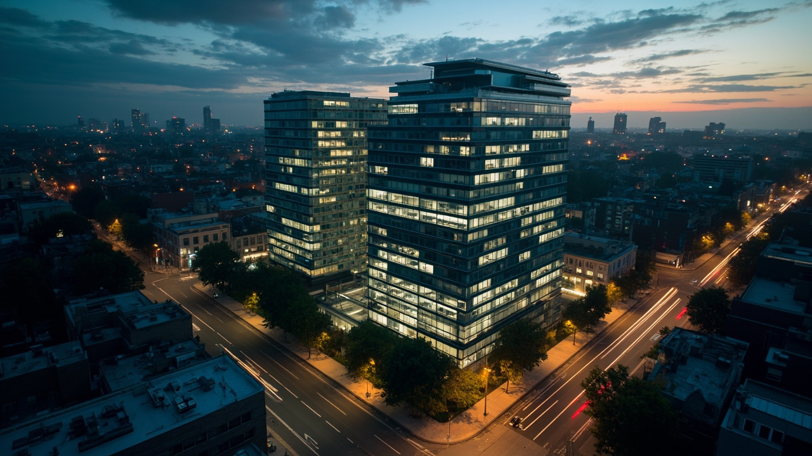
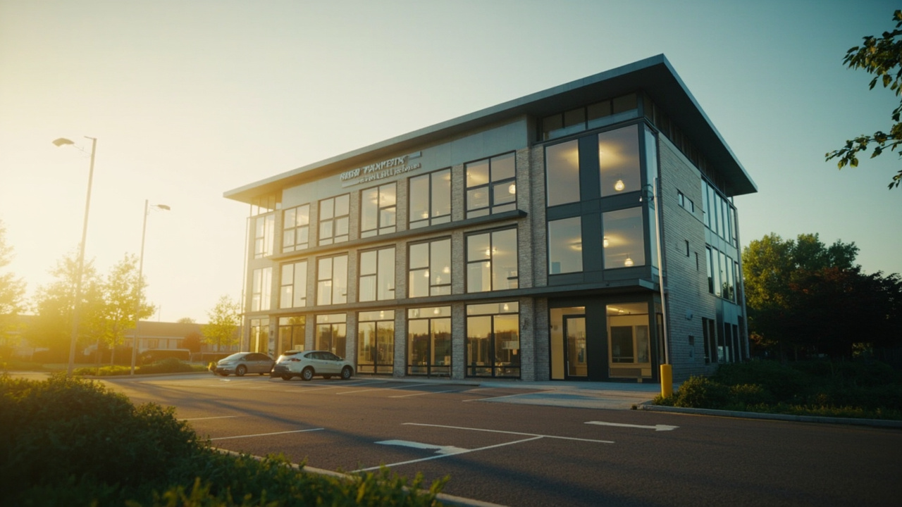
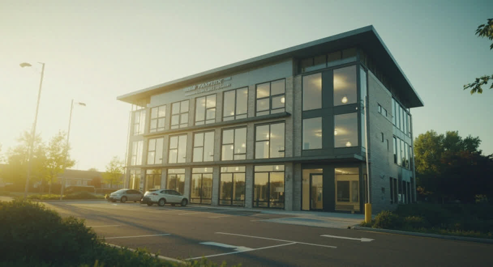

Bedrijfsvideo met bewijs
Vijftien minuten eigen opnames worden een filmische bedrijfsvideo — en elke gevel, entree en parkeerplaats blijft aantoonbaar kloppen.
Bekijk de werkwijzeZie het bewijs
resultaat — cinematische render (demo-impressie)
bron — telefoonstijl (demo-impressie)De volumes en verhoudingen van het pand veranderen niet.
Ingang en naamvoering blijven exact waar ze zijn.
Parkeer-layout en context blijven herkenbaar.
Camerapaden blijven fysiek vliegbaar.
Personen alleen in beeld na uitdrukkelijk akkoord.
Grote productie-kwaliteit uit je eigen telefoon.